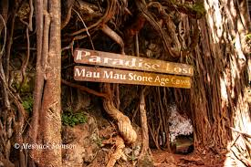
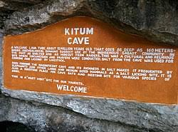
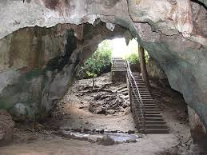
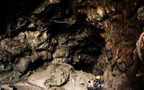
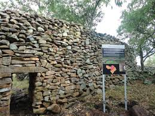

Explore Kenya's rich history through ancient caves, archaeological sites, and cultural landmarks

Historic caves used by Mau Mau freedom fighters during Kenya's independence struggle. Rich in revolutionary history and natural beauty.

Ancient salt-mining cave extending 200 meters into the mountain. Famous for its wildlife and geological significance.

Historic slave caves on the Kenyan coast, serving as a reminder of the East African slave trade era. Educational and deeply moving.

Volcanic caves with unique lava tube formations, home to rare bats and offering spectacular underground exploration.
UNESCO World Heritage site known as the "Cradle of Mankind" with important prehistoric fossils and archaeological discoveries.

UNESCO World Heritage site featuring ancient dry-stone wall structures built by early Bantu communities over 500 years ago.
Always explore caves with certified guides for safety and detailed historical context
Wear sturdy hiking boots with good grip for cave exploration
Carry reliable flashlights or headlamps for dark cave interiors
Respect site rules and avoid flash photography in sensitive areas